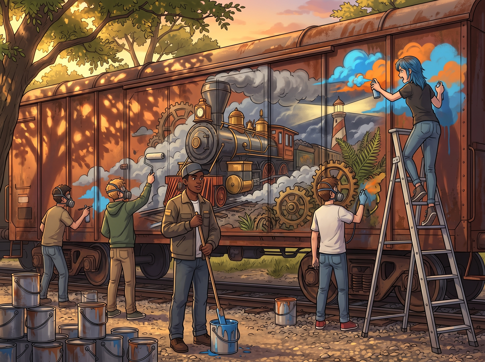

壁畫日和長者探班

午後四點半，波特蘭東區的陽光穿透鐵道邊的老洋槐樹，在二號車廂二十米長的外牆耐候鋼板上投下斑駁的金影。
實訓課結束後，五名原本桀驁不馴的少年完全沒有離開的意思，反而全部捲起袖子，在 Miles 的指揮下把外牆區域圍成了熱火朝天的「街頭調色工坊」。
一、 顏料配方與外牆封釉：街頭塗鴉的工業級升級
地面上整齊碼放著幾十個大號金屬調色桶、丙烯耐候顏料與幾桶專用環氧防銹底漆。
- Miles 的硬核調色法： Miles 站在中央，手裡握著長柄攪拌棒，教少年們如何按比例混合高耐光丙烯與防腐清漆：「底層用鈷藍和深鐵灰打底，模擬工坊車廂的鋼鐵質感；高光部分加一點微米級黃銅金屬粉，這樣黃昏陽光照上來時，齒輪和燈塔的光柱會像剛切削出來的金屬一樣發亮！」
- 學員們的分工塗刷： 五個少年戴著防毒面罩，手持滾筒、噴槍與寬排筆，在 Miles 預先勾勒好的巨幅炭筆草稿上揮灑重墨——
- 畫面中央是一列破開狂風巨浪的復古蒸汽火車頭，車頭鉚釘閃爍著黃銅光澤；
- 兩側延伸出無數精密咬合的巨大機械齒輪、老式相機的暗房光圈葉片，以及生機盎然的波士頓腎蕨與直立迷迭香藤蔓；
- 最上方是一道破開暴風雨雲層、溫柔籠罩大地的燈塔光束。
- Chloe 的高空噴繪支援： Chloe 踩在三米高的雙鋁合金人字梯頂端，腰間掛滿了亮藍色與火焰橙的自噴漆罐，一邊狂按噴頭補全火車頭噴出的巨大蒸汽雲，一邊大聲指揮：「給老娘在輪軌邊緣拉一道高光！對！就是要這種把整條鐵軌都要炸飛的視覺衝擊力！」
二、 退休特工的無聲探班：三秒內被雷達鎖定
就在壁畫完成度達到 90%、所有人滿身各色顏料彩斑時，舊鐵道外側傳來了一聲極其平穩低沉的關門聲。
穿著深色夾克、戴著老花鏡、手裡拿著一本厚皮筆記本與一紙袋現烤藍莓司康的 Robert McCall，邁著那種特有的勻速步伐走進了花園。
「咳！長官！注意十點鐘方向！」正趴在梯子上的 Chloe 眼神比雷達還尖，一眼就瞥見了走過來的 Robert。
她靈活地從梯子上一滑而下，帆布鞋穩穩踩在枕木上，抹了一把鼻尖上的天藍色顏料，扯下防塵面罩，大步迎了上去。
三、 Chloe 的「滿級吹捧」與硬核加油添醋
「下午好，Price 小姐。」Robert 停下腳步，摘下平頂帽，平靜深邃的目光落在那幅氣勢磅礴的外牆巨幅壁畫上，眼底泛起一抹難得的溫暖漣漪。
「何止是下午好，McCall 先生！」Chloe 雙手插在工裝褲口袋裡，下巴朝著正專注給齒輪修邊的 Miles 狠狠一揚，那張嘴瞬間開啟了全功率輸出模式：
「老娘必須嚴肅向你匯報——你送來的這小子簡直是個披著畫家外皮的重工業戰神！」
Robert 微微挑了挑眉，眼神裡帶著一絲興味：「哦？是嗎？」
「那當然！」Chloe 煞有介事地比劃著雙手，表情誇張得如同在描述一場好萊塢大片：
「上午在二號車廂，五個差點把學校掀翻的刺頭小鬼剛進門，Miles 眼睛都沒眨一下，單手就把三十公斤重的實心黃銅鋼錠像扔麵包一樣砸上車床！然後——只用了零點幾微米的進刀速度，直接車削出了一套連西雅圖波音工程師看見都要跪下叫師父的完美浮雕！」
說到這裡，Chloe 更是神秘兮兮地湊近半步，壓低嗓音用氣音補充道：
「下午他帶這群小弟畫外牆，那領導力簡直絕了！這群平時連掃把都不願意碰的傢伙，被 Miles 指揮得比瑞士鐘錶齒輪還聽話！老娘敢打包票，要是現在給他一個師的扳手和噴漆罐，他能在一週內把全波特蘭的廢棄火車全部改造成重型移動裝甲堡壘！」
四、 平靜的認可與生活的回響
聽著 Chloe 漫無邊際但真誠無比的狂吹，一旁拿著相機走過來的 Max 忍不住捂著嘴笑彎了腰，連在長桌邊整理帳目的 Victoria 都無奈地搖了搖頭。
Miles 聽到動靜轉過頭，看見 Robert 站在那裡，臉頰頓時紅透到了耳根，連忙放下畫筆快步走過來，有些侷促地搓著沾滿顏料的雙手：「McCall 先生……您怎麼來了？Chloe 姐她在開玩笑，我只是……只是教大家怎麼調防銹漆……」
Robert 靜靜地看著眼前這個眼神清澈、滿頭大汗卻挺直了腰桿的年輕人。
他走上前，沒有在意 Miles 衣服上的油漆，伸出那隻沉穩有力的大手，重重拍了拍 Miles 的肩膀。隨後，Robert 抬頭凝視著壁畫上那道破開陰霾、溫暖照亮火車頭的金色燈塔光束，低聲說道：
「線條很實，顏色沒有一處在猶豫。」
Robert 轉過身，把手裡的藍莓司康遞給 Kate，隨後對著滿臉得意的 Chloe 和眾人微微頷首，聲音低沉如大提琴的琴音：
「Price 小姐說的話也許加了 80% 的水分，但有一點她沒說錯——」
長者轉頭注視著 Miles，眼中滿是長輩對後輩最深沉的期許與欣慰：
「當你把專注放在創造而不是摧毀上的時候，你的雙手確實擁有改變這個世界的力量。」
暮色降臨，波特蘭東區的晚霞將巨幅壁畫上的黃銅齒輪與燈塔光芒染得一片金紅。孩子們在大笑著分食熱司康，點唱機的歌聲穿過鐵道花園，在這個被四個女孩與老兵共同守護的小天地裡，希望與重生的色彩，正被一筆一劃地刻進最堅硬的鋼鐵之中。